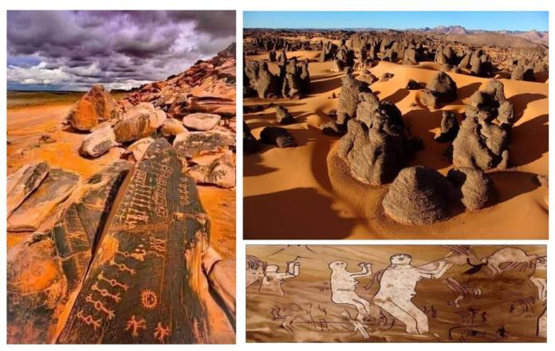

Séfar, parfois surnommée «la ville des pierres» ou encore « la cité des Djinns », est une ancienne cité mystérieuse perdue au cœur du massif montagneux du Tassili n’Ajjer, dans la wilaya de Djanet, à plus de 2 400 km au sud d’Alger et tout près de la frontière libyenne.
Gravure mystérieuse à Séfar, la cité des Djinns.
Séfar est la plus grande ville troglodyte du monde, avec plusieurs milliers de maisons fossilisées et un trésor inestimable de plus de 15 000 dessins et gravures rupestres datant du Néolithique, ayant valu le surnom de cité mystérieuse des Djinns.
C’est ce qui fait de Séfar le plus grand musée d’art préhistorique à ciel ouvert au monde, perdu dans le grand Sahara algérien, abritant plusieurs dizaines de milliers de dessins, de gravures et de peintures rupestres.
Découvertes dans les années 1950 par l’explorateur et préhistorien français Henri Lhote, certaines de ces peintures rupestres dateraient de plus de 8000 ans.